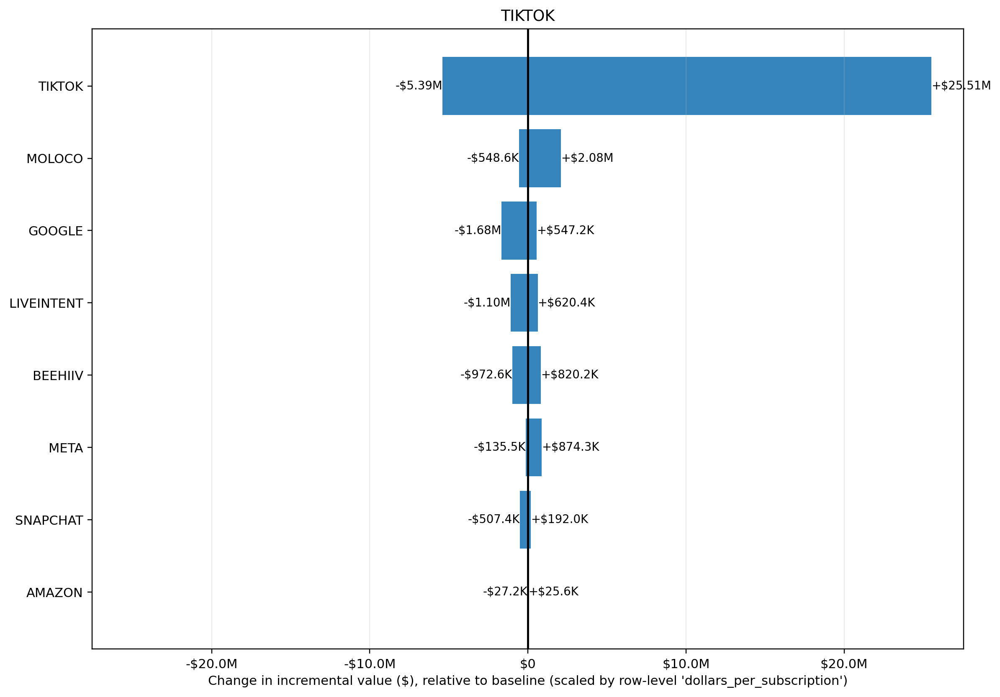

Input CSV: tornado_tiktok.csv
Channels altered: TIKTOK
Value Scaling: scaled by row-level 'dollars_per_subscription'
Selection objective: total_new_value
Best prior setup: CONTRIBUTION_MEAN: NA(mu=NA, sigma=NA) | CONTRIBUTION_SCALE: NA(mu=NA, sigma=NA) | CONVERTED_ROI_MU_BY_CHANNEL: NA(mu=NA, sigma=NA) | CONVERTED_ROI_SIGMA_BY_CHANNEL: NA(mu=NA, sigma=NA) | KPI_TYPE: NA(mu=NA, sigma=NA) | KPI_TYPE_EFFECTIVE: NA(mu=NA, sigma=NA) | PRIOR_DESIGN_MODE: NA(mu=NA, sigma=NA) | PRIOR_GRID_TYPE: NA(mu=NA, sigma=NA) | REVENUE_PER_KPI: NA(mu=NA, sigma=NA) | ROI_PRIOR_OVERRIDES: NA(mu=NA, sigma=NA) | RUN_MODE: NA(mu=NA, sigma=NA) | STRUCTURAL_OVERRIDES: NA(mu=NA, sigma=NA) | SWEEP_TYPE: NA(mu=NA, sigma=NA) | TWO_LAYER_ENABLED: NA(mu=NA, sigma=NA)
| prior_setup | total_new_value | delta_value_vs_baseline | delta_roi |
|---|---|---|---|
| CONTRIBUTION_MEAN: NA(mu=NA, sigma=NA) | CONTRIBUTION_SCALE: NA(mu=NA, sigma=NA) | CONVERTED_ROI_MU_BY_CHANNEL: NA(mu=NA, sigma=NA) | CONVERTED_ROI_SIGMA_BY_CHANNEL: NA(mu=NA, sigma=NA) | KPI_TYPE: NA(mu=NA, sigma=NA) | KPI_TYPE_EFFECTIVE: NA(mu=NA, sigma=NA) | PRIOR_DESIGN_MODE: NA(mu=NA, sigma=NA) | PRIOR_GRID_TYPE: NA(mu=NA, sigma=NA) | REVENUE_PER_KPI: NA(mu=NA, sigma=NA) | ROI_PRIOR_OVERRIDES: NA(mu=NA, sigma=NA) | RUN_MODE: NA(mu=NA, sigma=NA) | STRUCTURAL_OVERRIDES: NA(mu=NA, sigma=NA) | SWEEP_TYPE: NA(mu=NA, sigma=NA) | TWO_LAYER_ENABLED: NA(mu=NA, sigma=NA) | $94.57M | +$37.68M | 196.09% |
| CONTRIBUTION_MEAN: NA(mu=NA, sigma=NA) | CONTRIBUTION_SCALE: NA(mu=NA, sigma=NA) | CONVERTED_ROI_MU_BY_CHANNEL: NA(mu=NA, sigma=NA) | CONVERTED_ROI_SIGMA_BY_CHANNEL: NA(mu=NA, sigma=NA) | KPI_TYPE: NA(mu=NA, sigma=NA) | KPI_TYPE_EFFECTIVE: NA(mu=NA, sigma=NA) | PRIOR_DESIGN_MODE: NA(mu=NA, sigma=NA) | PRIOR_GRID_TYPE: NA(mu=NA, sigma=NA) | REVENUE_PER_KPI: NA(mu=NA, sigma=NA) | ROI_PRIOR_OVERRIDES: NA(mu=NA, sigma=NA) | RUN_MODE: NA(mu=NA, sigma=NA) | STRUCTURAL_OVERRIDES: NA(mu=NA, sigma=NA) | SWEEP_TYPE: NA(mu=NA, sigma=NA) | TWO_LAYER_ENABLED: NA(mu=NA, sigma=NA) | $74.61M | +$17.73M | 92.24% |
| CONTRIBUTION_MEAN: NA(mu=NA, sigma=NA) | CONTRIBUTION_SCALE: NA(mu=NA, sigma=NA) | CONVERTED_ROI_MU_BY_CHANNEL: NA(mu=NA, sigma=NA) | CONVERTED_ROI_SIGMA_BY_CHANNEL: NA(mu=NA, sigma=NA) | KPI_TYPE: NA(mu=NA, sigma=NA) | KPI_TYPE_EFFECTIVE: NA(mu=NA, sigma=NA) | PRIOR_DESIGN_MODE: NA(mu=NA, sigma=NA) | PRIOR_GRID_TYPE: NA(mu=NA, sigma=NA) | REVENUE_PER_KPI: NA(mu=NA, sigma=NA) | ROI_PRIOR_OVERRIDES: NA(mu=NA, sigma=NA) | RUN_MODE: NA(mu=NA, sigma=NA) | STRUCTURAL_OVERRIDES: NA(mu=NA, sigma=NA) | SWEEP_TYPE: NA(mu=NA, sigma=NA) | TWO_LAYER_ENABLED: NA(mu=NA, sigma=NA) | $70.71M | +$13.82M | 71.92% |
| CONTRIBUTION_MEAN: NA(mu=NA, sigma=NA) | CONTRIBUTION_SCALE: NA(mu=NA, sigma=NA) | CONVERTED_ROI_MU_BY_CHANNEL: NA(mu=NA, sigma=NA) | CONVERTED_ROI_SIGMA_BY_CHANNEL: NA(mu=NA, sigma=NA) | KPI_TYPE: NA(mu=NA, sigma=NA) | KPI_TYPE_EFFECTIVE: NA(mu=NA, sigma=NA) | PRIOR_DESIGN_MODE: NA(mu=NA, sigma=NA) | PRIOR_GRID_TYPE: NA(mu=NA, sigma=NA) | REVENUE_PER_KPI: NA(mu=NA, sigma=NA) | ROI_PRIOR_OVERRIDES: NA(mu=NA, sigma=NA) | RUN_MODE: NA(mu=NA, sigma=NA) | STRUCTURAL_OVERRIDES: NA(mu=NA, sigma=NA) | SWEEP_TYPE: NA(mu=NA, sigma=NA) | TWO_LAYER_ENABLED: NA(mu=NA, sigma=NA) | $67.00M | +$10.12M | 52.66% |
| CONTRIBUTION_MEAN: NA(mu=NA, sigma=NA) | CONTRIBUTION_SCALE: NA(mu=NA, sigma=NA) | CONVERTED_ROI_MU_BY_CHANNEL: NA(mu=NA, sigma=NA) | CONVERTED_ROI_SIGMA_BY_CHANNEL: NA(mu=NA, sigma=NA) | KPI_TYPE: NA(mu=NA, sigma=NA) | KPI_TYPE_EFFECTIVE: NA(mu=NA, sigma=NA) | PRIOR_DESIGN_MODE: NA(mu=NA, sigma=NA) | PRIOR_GRID_TYPE: NA(mu=NA, sigma=NA) | REVENUE_PER_KPI: NA(mu=NA, sigma=NA) | ROI_PRIOR_OVERRIDES: NA(mu=NA, sigma=NA) | RUN_MODE: NA(mu=NA, sigma=NA) | STRUCTURAL_OVERRIDES: NA(mu=NA, sigma=NA) | SWEEP_TYPE: NA(mu=NA, sigma=NA) | TWO_LAYER_ENABLED: NA(mu=NA, sigma=NA) | $62.78M | +$5.90M | 30.68% |
| channel | delta_value | delta_roi |
|---|---|---|
| TIKTOK | +$38.20M | 21.80% |
| MOLOCO | +$2.80M | 3.33% |
| META | +$1.40M | 1.67% |
| AMAZON | -$23.8K | -1.51% |
| SNAPCHAT | -$79.4K | -0.02% |
| BEEHIIV | -$1.15M | -3.51% |
| LIVEINTENT | -$1.43M | -1.79% |
| -$2.04M | -0.20% |
Largest sensitivity ranges are in TIKTOK (-$5.39M to $25.51M); MOLOCO (-$548.6K to $2.08M); GOOGLE (-$1.68M to $547.2K). Biggest upside scenario is TIKTOK at $25.51M, while the largest downside scenario is TIKTOK at -$5.39M. Bars crossing zero indicate the channel can either help or hurt depending on prior assumptions; wider bars indicate greater uncertainty and model sensitivity.
